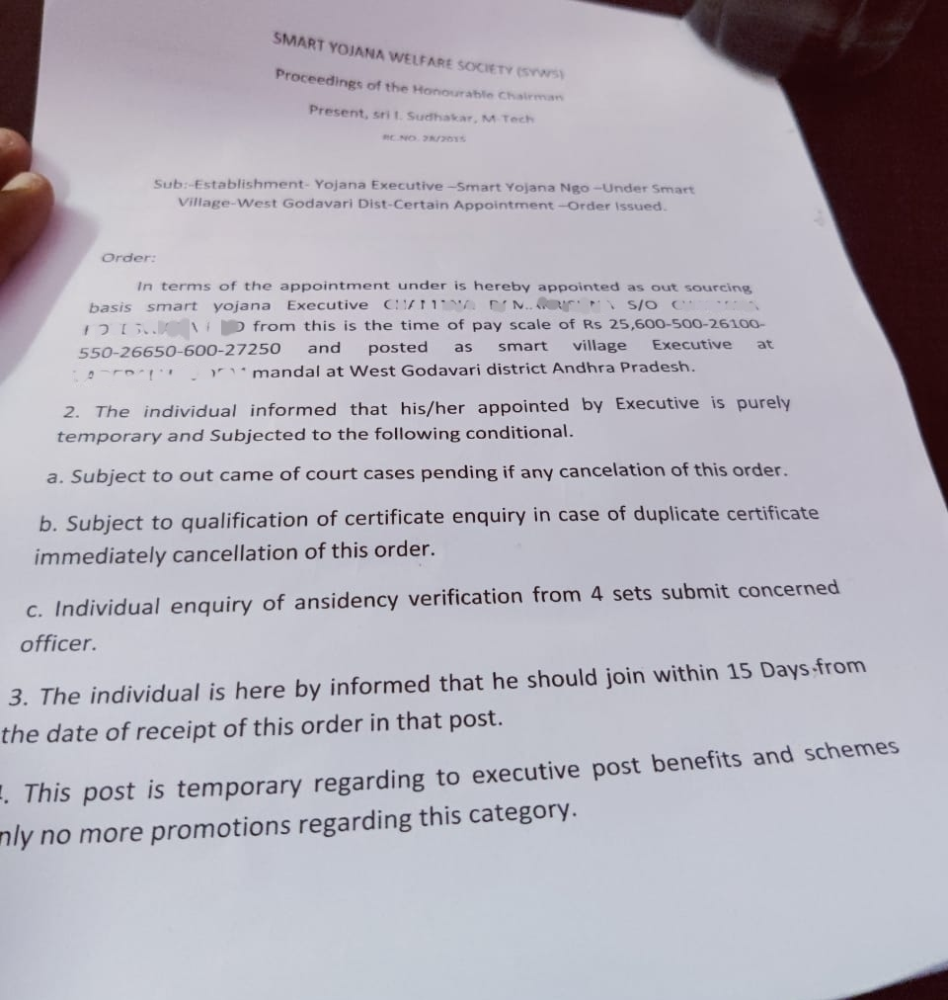

బీబీసీ తెలుగులో స్మార్ట్ విలేజ్ ఉద్యోగాల మోసం పై ప్రచురితం అయిన కథనం
స్మార్ట్ విలేజ్ బాబ్స్ మోసం పై బీబీసీ తెలుగు పూర్తి కథనంDailyhaunt ఆర్టికల్:
Dailyhaunt ఆర్టికల్ABN లోను వచ్చిన ప్రస్తావన
కొత్తగా తెరపైకి వచ్చిన స్మార్ట్ యోజన వెల్ఫేర్ సొసైటీ(Smart Yojana Welfare society)
2015 సంవత్సరం లో నర్సీపట్నం కేంద్రంగా స్మార్ట్ యోజన వెల్ఫేర్ సొసైటీని నమోదు చేయడం జరిగింది. దీనికి ప్రెసిడెంట్ గా చెండా అయ్యప్ప వ్యవహరిస్తున్నారు,ఎండీ గా ఇండిపూడి సుధాకర్వున్నారు. 2015 నుంచి ఏ విధమయిన కార్యకలాపాలలో పాల్గొనని ఈ సొసైటీ ఇప్పుడు ఎందుకు తెరపైకి వచ్చిందో ఎవరికి అంతుచిక్కడం లేదు. 2021 సంవత్సరం ఆగస్ట్ నుంచి జరిగిన నియామకాలు అన్ని స్మార్ట్ యోజన వెల్ఫేర్ సొసైటీ పేరున జరుగుతున్నాయి. దీనితో ఉద్యోగులలో మరింత ఆందోళన మొదలయింది.
మోసపూరితంగా, స్మార్ట్ విలేజ్ పేరుతో మొదట్లో నిరుద్యోగులకు వల వేసి, ఇప్పుడు సొసైటీ లోకి వారిని తీసుకోవడం పెద్ద కుట్ర అని అనుమానాలు వ్యక్తం అవుతున్నాయి 2015 వ సంవత్సములోనే సొసైటీ రిజిస్టర్ చేసినప్పుడు, ఇంత కాలం ఎందుకు ఈ సొసైటీలో ఎవరికి ఉద్యోగాలు ఇవ్వలేదు. ఇప్పుడు ఎందుకు ఈ సొసైటీ పేరున ఉద్యోగాలు ఇస్తున్నారు.
స్మార్ట్ యోజన వెల్ఫేర్ సొసైటీ(Smart Yojana Welfare society) 2015 లోనే రిజిస్ట్రేషన్ జరిగింది. అభ్యర్థులకు గవ్నమెంట్ ఆఫ్ ఇండియా , గవ్నమెంట్ ఆఫ్ ఆంధ్రప్రదేశ్ పేరుతో నియామక పత్రాలు ఇవ్వడం కేవలం మోసపూరిత చర్య.
వీళ్లు చేసిన మోసాన్ని గ్రహించి, రాజీనామా చేసే వ్యక్తులతో... మీకు బదులుగా వేరొకరిని జాయిన్ చేస్తేనే, మీ డబ్బులు తిరిగి వస్తాయి అని ఈ సంస్థ నిర్వాహకులు చెప్పడం గమనార్హం.
ఈ కథనంతా నడిపించేది ... ఎవరు సూత్ర ధారి ? ఎవరు పాత్ర ధారి ?
ఎవరీ ఇండిపూడి సుధాకర్?
నర్సీపట్నం లోని ఒక మారు మూల గ్రామంలో జన్మించిన సుధాకర్. 2012 వ సంవత్సరంలో JNTU అనంతపురం నుండి బి.టెక్ పూర్తి చేసి, తదుపరి ఎంటెక్ కూడా పూర్తి చేసారు. 2003 సంవత్సరం నుండి అమలులో ఉన్న లిఫ్ట్ రూరల్ డెవలప్మెంట్ వెల్ఫేర్ సొసైటీకి , ఆ సొసైటీ ఫౌండర్ & సెక్రటరీ అయినటువంటి Ch.V.S
R. Prasad గారిచే ఎం.డీ గా నియమించబడ్డారు.
2019 వ సంవత్సరం నుండి
చెండ అయ్యప్ప అనే వ్యక్తితో కలిసి, వీరిద్దరితో పాటు మరికొంతమందిని కలుపుకొని, అమలులో లేని స్మార్ట్ విలేజ్ ప్రోగ్రాం పేరుని ఉపయోగించుకొని, గవ్నమెంట్ ఆఫ్ ఆంధ్రప్రదేశ్ పేరున గవ్నమెంట్ ఆఫ్ ఇండియా పేరున నకిలీ అపాయింట్మెంట్ లెటర్లు ఇచ్చి, దాదాపుగా ఇప్పటి వరకూ 5000 మందిని మోసం చేశారు. ఇదే విషయాన్ని 2022 లో సాక్షి, ఈనాడు, ప్రజాశక్తి వార్తా పత్రికలు భయట పెట్టాయి. ఆ సమయంలో కొన్ని ఇబ్బందులను ఎదుర్కొన్నప్పటకీ, రాజకీయ పలుకుబడి, మరియు అవినీతి అధికారుల సహాయంతో ఆ సమస్యను అణచివేేసారు.
ఇప్పుడు కొత్తగా స్మార్ట్ యోజన వెల్ఫేర్ సొసైటీ పేరుతో మరింత మంది నిరుద్యోగులను నట్టేట మొంచే కార్యక్రమాన్ని దిగ్విజయంగా 5 జిల్లాలో కొనసాగిస్తున్నారు.